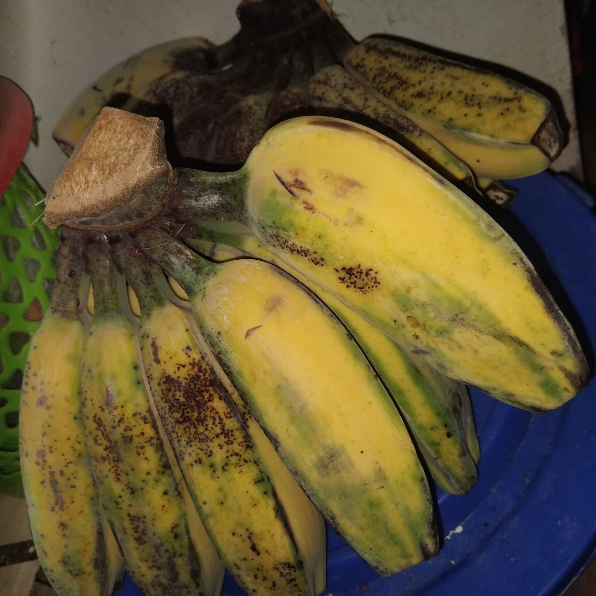

.png)
Why Won't Bananas Stop Ripening?

Imagine a day when you or your family bought a bunch of freshly harvested bananas. Those banana peels were all still green in color and the flesh were sort of hard in texture. But in a few days being left unprocessed, the bananas underwent changes. Over time, the green peels gradually turned yellow and the flesh softened.
At that point, you might come into a conclusion that fruits continue ripen even after being harvested. But wait, take a look at some other fruits, like oranges, grapes, strawberries, watermelons. Apparently, they do not change significantly or ripen post-harvest. So, why do some fruits continue the ripening process after harvest, while some don’t?
That question used to be a perplexing concern to me. As the time passed, I finally got some answer in middle school. One of the subjects I was taught mentioned two types of fruits based on their ripening process: climacteric and non-climacteric fruits. Basically, this classification identifies whether the fruits continue to ripen after being harvested or not. Those typical fruits that continue the ripening process post-harvest—such as bananas, mangoes, and apples—fall into the climacteric fruits category. This particular characteristic is highly related to one of the plant hormones called ethylene gas. Ethylene gas is a plant hormone specifically in charge of the ripening process. In climacteric fruits, the amount of this hormone rises significantly after the fruits are detached from the trees. For this reason, the fruits continue to undergo changes as a part of their ripening process.
On the contrary, citrus fruits, grapes, berries, watermelons, and some other are classified as non-climacteric fruits. These fruits don’t produce significant amount of ethylene gas after being harvested. I also read an article online that non-climacteric fruits don’t get influenced by ethylene as much as climacteric fruits do. As a result, this type of fruits stops ripening after being harvested. They kind of remain at the same state for a while until starting to rot at one point. It shows how significant a role of a certain hormone in the life of a plant.
Correspondingly, our bodies also have what is called as ‘Growth Hormone’, which is in charge of growth, cell reproduction, and cell regeneration. It’s fascinating how living things rely on invisible signals to go through life. Just like how fruits rely on ethylene to ripen, we rely on the growth hormone to grow. Seemingly, without enough Growth Hormone, I wouldn’t have been able to write this piece!